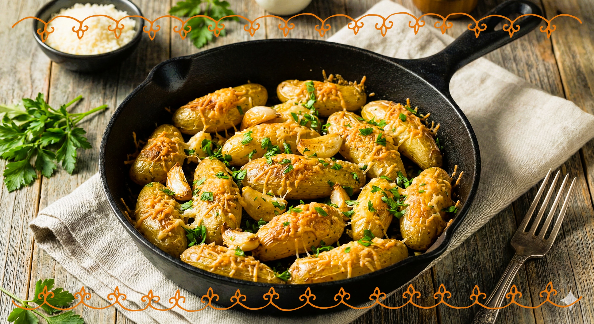

🏠 Home
Roasted Garlic-Parmesan Fingerling Potatoes

Cooking does not have to be difficult! This recipe of Roasted Garlic-Parmesan Fingerling Potatoes comes to prove
just that. Let the perfume from roasted garlic fill your kitchen and dive in! This recipe requires around 10
minutes for preparation and about 20 minutes of work! It serves up to 4
portions. Enjoy 😋.
Ingredients
- 1 pound fingerling potatoes, halved lengthwise;
- 2 cloves garlic, minced;
- 2 tablespoons grated Parmesan cheese;
- 1 teaspoon lemon zest;
- ½ teaspoon salt;
- ¼ teaspoon freshly ground black pepper;
- 2 tablespoons olive oil;
- 1 tablespoon butter;
- 2 tablespoons chopped fresh parsley.
Step-by-step
- Gather the ingredients. Preheat the oven to 425 degrees F (220 degrees C).
- Toss potatoes, garlic, Parmesan cheese, lemon zest, salt, and black pepper together in a bowl. Drizzle with
olive oil and toss again until evenly combined.
- Heat a cast-iron skillet over medium-high heat. Add butter and heat until melted. Add potatoes; cook and toss
until evenly coated with butter, about 2 minutes. Move the skillet to the preheated oven.
- Roast in the preheated oven until soft, 15 to 20 minutes, tossing halfway through. Remove from oven and top with
parsley.